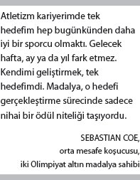
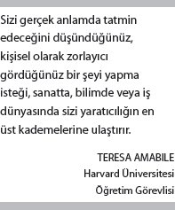
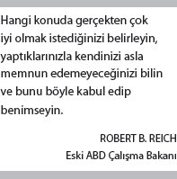
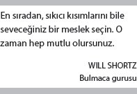

Kişinin yaptığı iş, yeteneğine uygun mu diye
Onu seyretmen gerekmez.
Sadece gözlerine baksan kâfi.
Sos yapan bir aşçı, ilk kesiği
Atan bir cerrah
Konşimento dolduran memur
Hepsinin yüzünde aynı kendinden geçmişlik...
Çalışırken kendilerini unuturlar.
Benliğini unutup objeye dalan o bakış
Ne güzeldir.
— W. H. Auden
1944 yılının yaz mevsiminde bir sabah, on yaşındaki Mihaly Csikszentmihalyi, Budapeşte'deki bir tren istasyonunda annesi, iki erkek kardeşi ve kendilerini uğurlamaya gelen yetmiş kadar akrabasıyla oturmaktaydı. İkinci Dünya Savaşı, tüm hızıyla sürüyordu. Mihver ülkelerinin kararsız ülkesi Macaristan, politik ve coğrafi olarak büyük baskı altındaydı. Macaristan'ın ABD ve İngiltere ile gizli barış görüşmeleri yapmasına misilleme olarak Nazi askerleri ülkeyi işgal etmekteydi. Öte yandan Sovyetler de başkente doğru ilerlemekteydi.
Gitme zamanıydı. Dört kişilik aile Venedik'teki diplomat babalarının yanına gitmek üzere trene bindi. Tren güneybatıya doğru yol alırken uzaklarda bombalar patlıyordu. Trenin pencerelerinden içeri mermiler giriyor, tüfekli bir asker trenden karşılık veriyordu. On yaşındaki çocuk kanepenin altına sinmişti. Korkuyordu. Biraz da sinirlenmişti duruma.
Csikszentmihalyi, altmış beş yıl sonra "O anda büyüklerin nasıl yaşanacağına dair hiçbir fikirleri olmadığını düşündüm" diyecekti.
Bindiği tren, Tuna'dan geçen son tren olarak anılacaktı uzun yıllar. Yola çıkışlarından kısa süre sonra hava taarruzları ile Macaristan'ın ana köprüleri imha edilmişti. Csikszentmihalyi ailesi, iyi eğitimli, birbirlerine sıkı sıkıya bağlı insanlardı ama savaş, hayatlarını yerle bir edecekti. O sabah tren istasyonuna gelen akrabaların yarısından fazlası beş ay içinde hayatını kaybetti. Csikszentmihalyi'nin erkek kardeşlerinden biri Ural dağlarındaki çalışma kampında altı yıl kaldı. Diğeri de Sovyetlere karşı savaşırken öldü.
Csikszentmihalyi, "Bu yaşadıklarım beni düşünmeye sevk etti" diyordu. "Yaşamanın bundan daha iyi bir yolu olmalı."
İTAATTEN SORUMLULUK ÜSTLENMEYE
Özerkliğin zıddı kontroldür. Davranışsal pusulasının iki zıt kutbunda yer aldıkları için bize farklı kaderleri işaret ederler. Kontrolün sonucunda itaat doğar. Özerklik ise sorumluluk üstlenmeye götürür bizi. Bu ayrım bizi Tip I davranışının ikinci unsuru olan ustalığa yani önemli olan bir konuda daha iyi olma arzusuna götürür.
Başta da anlattığım gibi Motivasyon 2.0'ın hedefi insanları özel şeyleri özel şekilde yapmaya teşvik etmekti. Yani onları itaate zorlamaktı. Bu hedef için, bir sepet havuç ile uzun bir kızılcık sopasından daha iyi motivasyon unsuru bulmak imkansızdır. İnsanın kendini gerçekleştirmesi için bunun ümit vaat eden bir yöntem olduğunu söylemenin yolu yok elbette. Ama ekonomik bir strateji olarak kendi içinde belli bir mantığı vardı. Rutin işler, yani yirminci yüzyıldaki işlerin çoğunluğu için itaat etmek pek uygundu çok zaman.
Ama o zamanlar geçmişte kaldı. Yirmi birinci yüzyılın tanımsal görevleri için bu tür bir strateji hiç ama hiç uygun değildir. Karmaşık sorunları çözmek, sorgulayan bir beyne sahip olmaya ve yeni bir çözüme giden yolda denemeler yapma isteğine bağlıdır. Motivasyon 2.0, itaat isterken Motivasyon 3.0 ise sorumluluk üstlenmeyi gerektirir. Ustalık ancak bu şekilde doğar. Üçüncü güdümüzün önemli ama geri planda kalmış bir unsuru olan ustalık, günümüz ekonomisinde başarılı olmanın ana koşullarından biridir.
Ne yazık ki "yetki verme" gibi şirket koridorlarında çokça yankılanan tatlı sözcüklere karşın modern bir işyerinin en öne çıkan nitelikleri, sorumluluk üstlenme olgusunun eksikliği ile ustalığı göz ardı edişidir. Gallup tarafından bu konuyla ilgili olarak yapılan çok geniş bir araştırmanın sonuçlarına göre ABD'de çalışanların yarısından fazlası ile işi arasında sıkı denilebilecek bir bağ yok. Yüzde yirmisi de işinden tam anlamıyla kopuk. Bu kopukluğun maliyeti verimlilik kaybı olarak ortaya çıkıyor ki onun rakamsal ifadesi de yılda üç yüz milyar doları buluyor. Bu rakam, Portekiz, Singapur veya İsrail gibi ülkelerin gayri safi yurtiçi milli hasılalarından daha fazla.[78] Ancak karşılaştırmalı verilere bakılınca ABD'nin işyerlerinde Tip I davranışının görülme sıklığı anlamında yine de lider ülkeler arasında yer aldığını söyleyebiliriz. McKinsey & Co. danışmanlık şirketine göre bazı ülkelerde, yüzde iki-üç gibi çok düşük oranlarda da olsa çalışanların işleri ile aralarında çok sıkı bağlar bulunuyor.[79]
Aynı şekilde önemli olan bir başka husus da işe bağlılığın ustalaşmaya giden yolda son derece etkin bir güç olması. İtaat, fiziksel varlığımızı sürdürme anlamında etkin bir yöntem olabilir. Ama kişisel kendini gerçekleştirme süreci için berbat bir yöntemdir. Mesut bir hayat sürmek, kontrol edenlerin taleplerini karşılamaktan daha fazlasını gerektirir. Ama işyerimizde ve okulumuzda itaat çok fazla, işimizi veya dersimizi sevme çok azdır. İtaat, günü kurtarmanıza yarar. Ama sizi sabaha çıkaracak olan bu sevgi ve bağlılıktır. Şimdi bu noktada yeniden Csikszentmihalyi'nin hikayesine dönüyoruz.
Nazi Almanya'sının zulmüne ve Sovyetler'in ülkesini işgaline tanıklık ettikten sonra delikanlılık çağlarında Csikszentmihalyi, itaatten haklı şekilde bıkmış durumdaydı. Seveceği bir şey arıyordu. Ama onu okulda bulamadı. Onüç yaşında liseden ayrıldı. Geçinebilmek için on yıl Doğu Avrupa ülkelerinde çeşitli ve kimi hayli garip işlerde çalıştı. Genç beynini kurcalayan, daha iyi nasıl yaşanır sorusunun cevabını bulabilmek için din ve felsefe konusunda bulabildiği her şeyi okudu. Öğrendikleri onu tatmin etmeyecekti. Ta ki Carl Jung'un psikoloji konusunda verdiği bir seminere rastgelene kadar. O gün aradığı cevapları psikolojinin vereceğini anladı.
Yirmi iki yaşındayken, 1956 yılında Csikszentmihalyi, ABD'ye psikoloji okumaya gitti. Chicago'ya indiğinde cebinde bir dolar yirmi beş senti olan, liseden kovulma, İngilizce ile tek aşinalığı Pogo karikatürlerinden ibaret bir gençti. Chicago'daki Macar tanıdıkları ona iş ve kalacak yer bulmasında yardım etti. Latince ve Almanca bilgisi, okuyup yazamadığı bir dilde girdiği Illinois lisesi denklik sınavlarını geçmesini sağladı. Illinois Üniversitesi'ne yazılıp gündüzleri okudu, geceleri bir otelin muhasebesini tuttu. Sonunda Chicago Üniversitesi'nin psikoloji bölümüne girdi ve orada –ABD'ye ayak bastıktan dokuz sene sonra– doktorasını aldı.
Ancak Csikszentmihalyi, psikolojinin ana akımlarına kapılmayı reddetti. Çok da uzun olmayan bir süre önce, bir bahar sabahında bana hayatla ilgili pozitif, yenilikçi, yaratıcı yaklaşımı incelemek istediğini, Sigmund Freud'un patolojik, tedaviye dönük görüşüyle, B. F. Skinner'ın mekanik çalışmalarıyla ve davranış olgusunu basit etki-tepki düzlemine indiren diğer bilim adamlarının yaptıklarıyla ilgilenmediğini söylemişti. Yaratıcılık üzerine yazmakla işe başladı. Yaratıcılık onu oyun konusunu araştırmaya yöneltti. Oyunu araştırması, insan deneyimine dair gizli kapıların açılmasını sağladı ve bu sayede de tanınan bir isim oldu.
İnsanlar, bir oyunda, Csikszentmihalyi'nin "ototelik deneyimler" adını verdiği –Yunanca auto (kendi kendine) ve telos (hedef veya amaç) – bir durumu yaşar. Ototelik bir deneyimde hedef, kişinin kendi kendini gerçekleştirmesidir. Faaliyet, kendi kendisinin ödülüdür. Csikszentmihalyi'nin doktora çalışmaları sırasında gözlemlediği ressamlar, dediğine göre yaptıkları işe kendilerini o kadar kaptırmışlar ki adeta transa geçmişler. Onlar için zaman çabuk geçiyormuş ve öz bilinçlilik durumu tamamen ortadan kalkmış. Kendisi bu tür faaliyetlerin cazibesine kapılmış başka insanlar üzerinde de çalıştı. Aralarında kaya tırmanıcıları, futbolcular, yüzücüler, mağara kaşifleri gibi kişilerin olduğu bu kişilerle mülakat yaparak bir faaliyeti ototelik yapan şeyi bulmaya çabaladıysa da sonuçlar onu hayal kırıklığına uğrattı. Sonraki günlerde şöyle yazacaktı: "İnsanlar bir dağa tırmanmanın veya çok güzel bir müzik parçası çalmanın nasıl bir duygu olduğunu hatırlamayı denediklerinde anlattıkları genellikle klişe ve derinlikten uzak şeylerdi."[80] Csikszentmihalyi'nin insanların deneyimlerini o anda mercek altına yatırabilmeye ihtiyacı vardı. 1970'lerin ortalarında yeni ve çığır açan bir teknoloji –bugün artık on iki yaşındaki her çocuğun antika gözüyle bakıp güleceği bir yenilik– imdada yetişti: Elektronik çağrı cihazı.
O sıralarda Chicago Üniversitesi'nde hocalık yapan ve kendi psikoloji laboratuvarını yöneten Csikszentmihalyi bir çağrı cihazı alıp son sınıf öğrencilerine her gün kendisini rastgele çaldırmalarını istedi. Çağrı cihazı her arandığında yapmakta olduğu işi ve o sırada kendisini nasıl hissettiğini not aldı. Güney California'da, şimdilerde ders verdiği Claremont Graduate Üniversitesi'ndeki odasında konuşurken "Çok eğlenceliydi," diye hatırlıyor o günleri. "İnsanların nasıl yaşadıklarına dair çok ayrıntılı bir resim elde ediyordun." Bu test sürüşünü esas alarak Deneyim Örnekleme Yöntemi adı altında bir metodoloji geliştirdi. İnsanları günde sekiz defa rastgele aralıklarla arıyor ve onlara neler yaptıklarını, kiminle beraber olduklarını, o anki ruh hallerini nasıl tanımlayabileceklerini soruyordu. Yedi günün sonunda verileri bir araya getiriyor ve spiral ciltli bir defter üzerinde bir kişinin haftalık mini sinemasını oluşturuyordu. Tek tek verileri birleştirince ortaya bir insanın deneyimlerinden meydana gelen eksiksiz bir kütüphane ortaya çıkar.

Csikszentmihalyi, bu sonuçlardan yola çıkarak ototelik deneyimlerin kabuğunu soymaya başladı. En az onun kadar önemli bir şey daha yaptı ve o garip Yunan esinli terimi bir kenara bırakıp insanları öylesi anları tanımlamakta kullandıkları bir kelimeyi kullanmaya başladı: akış. İnsanların hayatındaki en üst düzey, en tatmin edici deneyimler, insanların akış halinde oldukları anlarda yaşanıyordu. Ve bu daha önce hiç tanımlanmamış olan esrarengiz ve deneyüstü ruh halinin sırrına vakıf olmak aslında hiç de zor değildi. Akışta hedefler nettir. Dağın zirvesine çıkmanız, topu filenin üzerinden karşıya geçirmeniz veya kili doğru şekilde kalıba koyup pişirmeniz gerekir. Geribildirim çok hızlıdır. Dağın zirvesi ya yaklaşır ya da uzaklaşır. Top ya karşı tarafın sahasına ya da dışarı düşer. Yaptığınız çömlek ya pürüzsüz ya da yamuk çıkar fırından.
Daha da önemlisi akışta bir kişinin yapması gerekenle yapabileceği arasındaki ilişki mükemmeldir. Yüzleşilen sınav ne çok kolaydır ne de çok zor. Kişinin mevcut becerilerinin bir-iki kademe üstünde bir çaba gerektirir. Bu da vücudu ve zihni öyle bir zorlar ki çabanın kendisi en lezzetli ödül haline gelir. Bu denge, diğer günlük deneyimleri kolayca gölgede bırakan bir odaklanma ve memnuniyet düzeyi yaratır. Akış içerisinde insanlar o anı öylesine yoğun bir biçimde deneyimler ve kendilerini o denli her şeye hakim hissederler ki zaman, yer ve hatta benlik bilinçleri eriyip yok olur. Özerk olmasına özerktirler. Ama özerklik bir kenara, kendilerini kaptırmışlardır. Şair W. H. Auden'in de yazdığı gibi "çalışırken kendilerini unuturlar."
Bu ruh hali, tren Avrupa'nın raylarında yol alırken belki de o on yaşındaki çocuğun aradığı şeydi. Akışa ulaşmak, –tek bir an için değil, bir yaşama etiği olarak– bir aşçı, cerrah veya tezgahtar olarak ustalaşmak için o güzel "bir objeye dalıp gitme" halini muhafaza etmek, aranan cevaptı. Belki de yaşamak böyle olmalıydı.
BİR KARGO GEMİSİNDEKİ AKIŞ GÖREVLERİ
Yıllar önce Csikszentmihalyi –tam tarihi hatırlayamadı– Klaus Schwab tarafından İsviçre'nin Davos şehrine davet edildi. Schwab, Davos'ta dünyanın güçlü ve seçkin isimlerinin katılımıyla her yıl panel düzenliyor. Seyahatinde ona Chicago Üniversitesi'nden üç isim, Gary Becker, George Stigler ve Milton Friedman eşlik ediyordu. Üçü de iktisatçıydı ve Nobel ödülü sahibiydi. Beş adam bir akşam yemek için bir araya geldi. Yemeğin bitiminde Schwab, akademisyenlere modern iktisadın en önemli meselesinin ne olduğunu sordu.
Csikszentmihalyi, "Çok şaşırdım. Becker de, Stigler de, Friedman da 'Eksik olan bir şeyler var...' kıvamında şeyler söyledi." Bütün o açıklama gücüne rağmen iktisat bilimi yine de iş ortamlarında bile insan davranışına dair yeterince zengin bir anlatım sunmaktan uzaktı.
Csikszentmihalyi gülümseyip arkadaşlarını keskin zekalarından dolayı tebrik etti. 1970'lerin ortalarında duyurduğu akış kavramı, oyuna hemen girip her şeyi değiştirecek türden bir kavram değildi. Csikszentmihalyi, 1990 yılında konuya dair, geniş bir kitleye hitap eden ilk kitabını piyasaya çıkarınca bir miktar ses getirdi ve iş dünyasından kendisine küçük bir mürit grubu buldu. Bu yeni kavramı gerçek şirketlerin gerçek operasyonlarına entegre etmek ise yavaş giden bir iş. Zaten Motivasyon 2.0'da akış gibi bir konsept için fazla bir yer de bulamazsınız. Tip X işletim sistemi, işle ilgili olarak optimal risklere giren kişilere karşı değil ama bu tür olayları, insanların büyük işler başarması için gerekli koşullar olarak değil de mutlu tesadüfler olarak görmeyi yeğliyor.

Ne var ki ağır olsa da zemin artık değişiyor. Bölümün önceki bölümlerinde çalışanların işlerinden kopukluğuna dair verilerin de gösterdiği gibi bir işyeri akış durumuna izin vermiyorsa orada hem insanların memnuniyeti hem de kurumsal sağlık açısından maliyetler çok yüksek olabilir. Kimi şirketlerin bazı şeyleri farklı yapmaya uğraşmalarının sebebi de bu. Fast Company dergisinin de yazdığı gibi Microsoft, Patagonia ve Toyota gibi bazı şirketler, akış-dostu ortamlar yaratarak çalışanların ustalaşmasına katkıda bulunabileceklerini, bunun da işyerinde verimliliği ve memnuniyeti artıracağını görmüş bulunuyorlar.[81]
Mesela İsveçli haberleşme devi Ericsson'ın başkan yardımcısı Stefan Falk, akış kavramının ilkelerinden yararlanarak şirket içindeki bazı bölümlerin birleşme sürecini kolaylaştırdı. Müdürleri, çalışanların önüne net hedefler koyacak ve çabuk geribildirim alacak şekilde işleri ayarlamaya ikna etti. Ve müdürler, çalışanlarıyla yılda bir kere yapılan performans değerlendirmesi toplantılarında bir araya gelmek yerine onlarla yılda altı defa ve doksan dakikayı bulan sürelerle yüz yüze görüşüyorlar. Bu görüşmelerde çalışanların kendilerini işlerine ne kadar verdiklerini öğreniyor, ustalaşma yolunda aldıkları mesafeyi değerlendiriyorlar. Akış merkezli strateji o kadar iyi işliyor ki Ericsson bunu dünyanın dört bir yanındaki merkezlerinde kullanmaya başladı. Sonrasında Falk, İsveç'in muazzam büyüklükteki lojistik ve taşımacılık şirketi Green Cargo'ya transfer oldu. Orada müdürleri, akış konusunda kendi geliştirdiği bir metot ile eğitti. Daha sonra onlardan çalışanlarıyla ayda bir kere oturup konuşmalarını, işleriyle ilgili olarak yoğun mu ya da heyecansız mı olduklarını öğrenmelerini, görevlerini, kendi akışlarını bulacak şekilde ayarlamalarını istedi. İki yıllık bir yönetimsel revizyondan sonra, devlet kuruluşu olan Green Cargo, yüz yirmi beş yıllık tarihinde ilk defa olarak kâra geçti. Yöneticiler, yeni uygulamaya koyulan akış merkezli stratejinin bunun ana sebebi olduğunu söylüyorlar.[82]
Ayrıca Amerikan şirketlerinde çalışan on bir bin endüstriyel bilim adamı ve mühendis ile yapılan bir ankette, verimliliğin en iyi öngörücüsünün entelektüel meydan okumalar yani yeni ve ilginç bir şeyde ustalaşma dürtüsü olduğu ortaya çıktı. Bu içsel arzu ile motive olan bilim adamları, ana motivasyonları para olanlardan ciddi oranda daha fazla patent aldılar, hatta her grubun harcadığı çaba miktarını bile kontrol edebildiler.[83] (Yani, harici unsurlarla motive olan grup, Tip I kategorisindeki arkadaşları kadar çok ve uzun çalıştı. Ama daha az başarılı oldu. Nedeni muhtemelen çalışma sürelerinin daha azını akışta kullanmaları olabilir.)
2006 yılında genç bir oyun tasarımcısı olan Jenova Chen, Csikszentmihalyi'nin teorisi üzerine güzel sanatlar yüksek lisansını yazdı. Chen, bilgisayar oyunlarının insanlara mükemmel bir akış deneyimi yaşatabileceğine inanıyordu. Ama çok fazla oyun oynamak, takıntı düzeyinde bir uğraşı gerektiriyordu. Chen, neden normal oyunculara da akış hissini verecek bir oyun tasarlayamayayım diye düşündü ve tez projesini laboratuvarı olarak kullanarak bir oyun yarattı. Bu oyunda oyuncular, fareyi kullanarak ekrandaki amip benzeri bir yaratığı kontrol ediyorlar. Yaratık gerçeküstü bir okyanusta yüzerken diğer canlıları yiyor ve yavaş yavaş daha büyük ve gelişmiş bir canlıya dönüşüyor. Çoğu oyun, oyunculardan sabit, önceden belirlenmiş bir dizi beceriyi göstererek ilerlemesini isterken Chen'in oyunu, oyuncuların serbestçe dolaşmasına ve istedikleri gibi keşif yapmasına izin veriyor. Başarısız olma durumunda sona eren oyunların aksine bu oyunda başarısız olunca, oyun sizi becerilerinize daha uygun olan alt seviyeye geri gönderiyor. Chen, oyununa "flOw" adını vermiş. Oyun çok tutuldu. İnsanlar, oyunun internet üzerinden sunulan ücretsiz versiyonunu üç milyon kere oynadı. (Oyunu şu adrese girerek siz de oynayabilirsiniz:
http://intihuatani.usc.edu/cloud/flowing).
PlayStation için yazılan ücretli versiyonu ise üç yüz elli bin kere indirildi ve bir raf dolusu ödüle layık görüldü. Chen, bu oyun sayesinde, thatgamecompany adını verdiği kendi şirketini kurdu. Akış ve flOW üzerine kurulu olan şirket, Sony ile kısa sürede üç oyunluk bir sözleşme imzaladı ki bu, Californialı yirmi altı yaşında iki genç tarafından yönetilen, adı sanı neredeyse hiç duyulmamış bir başlangıç için büyük bir başarıydı.
Green Cargo, thatgamecompany ve patent alma şampiyonu bilim adamlarının çalıştığı şirketler, genellikle daha az idrak yeteneğine sahip rakiplerinin uygulamadığı iki taktiği uyguluyor. İlki, çalışanlarına benim "akış görevleri" dediğim işleri veriyorlar. Bunlar, ne çok sıcak, ne çok soğuk, ne çok zor, ne de çok kolay işler. İşyerinde hayal kırıklığının sebeplerinden biri insanların yapmaları gereken ile ellerinden gelen arasındaki uyumsuzluktur. Yapmaları gereken, becerebileceklerinden fazla ise o takdirde gerilim ve endişeye kapılırlar. Yapmaları gereken, becerebileceklerinin gerisindeyse o takdirde ise canları sıkılır. (Csikszentmihalyi, ototelik deneyimlerle ilgili olarak yazdığı ilk kitabına da Beyond Boredom and Anxiety – Can Sıkıntısı ve Endişenin Ötesinde adını vermişti.) Ama eşleşme doğru ise işte o zaman sonuç muhteşem olabilir. Akışın özü budur. Böyle işler, bize bölgeye yerleşmenin, düzen ve düzensizlik arasındaki uçurumun kenarında yaşamanın, ressam Fritz Scholder'ın dediği gibi "tesadüf ve disiplin arasındaki ince ipte yürümenin" benzersiz deneyimini yaşatır.
Akıllı şirketlerin akış-dostluluğunu artırmak ve çalışanlarının ustalaşma fırsatlarını çoğaltmak için kullandıkları ikinci taktik, Sawyer Etkisi'nin pozitif yönünü tetiklemektir. İkinci bölümden hatırlayacaksınız; bu harici ödüller oyunu işe çevirebiliyor. Ama akıntıyı ters yöne döndürmek ve işi oyuna çevirmek de mümkün. İşyerindeki bazı görevler, otomatik olarak dalga dalga bir akış yaratmıyorsa da yine de yapılmaları gerekiyor. Açıkgöz işletmeler, çalışanlarının kendi işlerini biraz şekillendirmelerine izin veriyorlar. Böylece alelade işlerin biraz renklenerek bir miktar akış yaratmasını sağlıyorlar. İki işletme fakültesi hocası, Amy Wrzesniewski ile Jane Dutton bu fenomeni hastane temizlikçileri, hemşireler ve kuaförler arasında araştırdı. Bulgularına göre mesela hastanelerdeki temizlik ekiplerinden bazı kişiler, gereken asgari işi yapmak yerine hastalarla sohbet etmekten hemşirelerin işlerini kolaylaştırmaya uzanan bir dizi yeni görev üstleniyorlar. Böyle farklı görevler üstlenen temizlikçilerin memnuniyeti ve kendi becerilerine bakışları olumlu anlamda etkileniyor. Görevlerinin sınırlarını yeni bir çerçeveye oturtan temizlikçiler, işin daha eğlenceli ve daha "kendilerine ait" olmasını sağlıyorlar. Wrzesniewski ve Dutton, "Özerkliği düşük işlerde bile çalışanlar, ustalaşmak için yeni alanlar yaratabiliyorlar" diye yazıyor.[84]
USTALIĞIN ÜÇ YASASI
Ustalık için akış esastır. Ama akış, ustalığın teminatı değildir. Çünkü bu iki kavram, zamanın farklı ufukları üzerinde hareket eder. Biri bir anda olur, diğer aylar, yıllar ve hatta kimi durumda on yıllar sonra kendini gösterir. Siz ve ben yarın sabah akış düzeyine ulaşmış olabiliriz. Ama hiçbirimiz bir gecede ustalaşamayız.
Daha derin, daha uzun soluklu bir şeyi ararken akıştan nasıl yararlanabiliriz o halde? Tip I davranış kalıbının ana unsurlarından olan ustalığa işimizde ve özel hayatımızda ulaşmak için ne yapabiliriz? Birkaç davranış bilimci bu sorulara cevap getirmeye çalıştı. Bulguları, ustalığın üç garip yasayla ilişkili olduğunu gösteriyor.
Ustalık Bir Zihniyettir
Hayattaki pek çok şeyde olduğu gibi ustalığa ulaşmak da hep aklımızda yeri olan bir hedeftir. En azından Carol Dweck, öyle söylüyor.
Stanford Üniversitesi psikoloji profesörlerinden Dweck, yaklaşık kırk yıldır çocuk ve ergenlerde motivasyon ve başarı konusu üzerine çalışmalar yapıyor. Muazzam bir hacme ulaşan bu deneysel araştırmaları, onu davranış biliminin süperstarı yaptı. Dweck'in imzası haline gelen fikri şu: İnsanların inandıkları şeyler, başarılarını belirler. Kendimize dair inançlarımız ve yeteneklerimizin doğası –Dweck, bunlara "öz-teoriler" diyor– deneyimlerimizi nasıl yorumladığımızı belirliyor ve başarabileceklerimizin sınırlarını çiziyor. Yaptığı araştırma çoğunlukla "zeka" kavramını ele alsa da bulguları çoğu insan becerisine aynı derecede uyuyor. Ve ustalığın ilk yasasını da belirliyor: Ustalık, bir zihniyettir.

Dweck'e göre insanlar, kendi zekalarına dair iki farklı görüşe sahip olabilirler. Bir grup, "varlık teorisi"ne inanır. Onlara göre zeka dediğimiz şey bir varlıktan ibarettir. İçimizdedir. Artırmamızın mümkün olmadığı sınırlı bir kaynak içinde bulunur. "Artımlı teori"yi benimseyenlerin görüşü farklıdır. Zekanın kişiden kişiye az da olsa değişiklik gösterebileceğine inanmakla birlikte çaba gösterilmesi durumunda zekanın geliştirilebileceğini de savunurlar. Bu teorinin savunucuları zekanın, kas gücüne benzediğini söyler. (Daha güçlü ve daha kaslı mı olmak istiyorsunuz? Çalışmaya başlayın.) Varlık teorisine inananlar ise bunu boya benzetir. (Daha uzun mu olmak istiyorsunuz? Hiç şansınız yok.)[*4] Zekanın sabit bir nicelik olduğuna inanıyorsanız, o takdirde her türlü eğitimsel ve profesyonel yüzleşme, ne kadar zekaya sahip olduğunuzu göstereceğiniz bir deneyime dönüşecektir. Zekanın artırılabilir olduğuna inanıyorsanız o takdirde aynı yüzleşmeler, artış için bir fırsat olacaktır. Bir görüşe göre zeka, sergileyebileceğiniz bir şeydir. Diğerine göre ise geliştirebileceğiniz bir şey.
İki öz-teori, çok farklı iki ayrı yola götürür bizi. Biri ustalığa gider, diğeri gitmez. Mesela hedefleri ele alalım. Dweck, hedeflerin iki türü olduğunu söyler: performans hedefleri ve öğrenme hedefleri. Fransızca dersinde pekiyi almak bir performans hedefidir. Fransızca konuşmak bir öğrenim hedefidir. Dweck, "Her iki hedef de tamamen normal ve tüm insanlığa özgüdür" diyor ve ekliyor: "Her ikisi de başarıyı ateşler."[85] Fakat ustalığa sadece bir tanesi götürür. Dweck, yaptığı çeşitli araştırmalarda çocuklara bir performans hedefi vermenin, mesela bir sınavdan yüksek not alma hedefi koymanın görecelik olarak basit sorunlar için etkili olduğunu ama çok zaman çocuğun kavramları yeni durumlara uygulama becerisini körelttiğini buldu. Mesela bir araştırmasında o ve bir meslektaşı, lise öğrencilerinden bir dizi bilimsel kuralı öğrenmelerini istedi. Yarısına bir performans hedefi, yarısına da bir öğrenme hedefi koydular. Her iki grup da dersi öğrendiğini gösterdikten sonra araştırmacılar öğrencilerden öğrendikleri yeni bilgileri bir dizi yeni problem karşısında kullanmalarını istediler. Bu problemler, bir öncekilerle ilişkili olmakla birlikte farklı nitelikteydi. Öğrenme hedefi verilen öğrenciler, bu yeni problemlerin çözümünde ciddi oranda daha başarılı oldular. Ayrıca daha uzun süre çalışıp daha fazla çözüm denemesi yaptılar. Dweck şöyle diyor: "Öğrenme hedefi konulan çocuklar, denemeye devam etmek için bir şeyde çok iyi olduklarını hissetmek zorunda değiller. Zaten hedefleri öğrenmek, akıllı olduklarını kanıtlamak değil."[86]
Gerçekten de iki öz-teori, çabalamak konusunda çok farklı bir bakış açısına sahiptir. Artımlı teoriye inananlara göre gayret etmek pozitif bir olgudur. Yetenek, demir gibi dövülerek şekillendirilebilir bir şey olduğundan daha çok çalışmak, onların gözünde daha iyi olmanın da bir yoludur. Dweck, "Varlık teorisi, kolay başarılardan oluşan bir diyet gerektirir" diyor. Bu bağlamda, eğer çok çalışır, çaba gösterirseniz, çok iyi değilsiniz demektir. Dolayısıyla insanlar, kolay hedefler seçerler. Böylece, hedefleri tutturduklarında mevcut yeteneklerini teyit etmiş fakat onları geliştirmek için çok az şey yapmış olurlar. Bir bakıma varlık teoricileri, ustalığa ulaşmak için gereken gayreti sarf etmeden usta gibi görünmek isterler.
Son olarak, bu iki farklı düşünce şekli, talihsiz durumlar karşısında birbirine zıt tepkiler doğurur. Dweck, bunlardan birine "çaresiz tepki", diğerine "ustalık merkezli tepki" adını verir. ABD'de beşinci ve altıncı sınıf öğrencileri arasında yaptığı bir araştırmada Dweck, öğrencilere, çözebilecekleri sekiz kavramsal problem verdi. Hemen arkasından da önlerine, bu sefer, yaşlarının küçük olması dolasıyla çözemeyecekleri kadar zor dört kavramsal problem daha koydu. Beyin gücünün sabit olduğuna inanan çocuklar, zor problemlerde kısa sürede pes edip zorlu durumlarda zekalarının yetersiz kalmasından yakındı. Diğer gruptaki öğrenciler ise problemlerin zor olmasına rağmen deneye devam etti ve bir çözüm üretebilmek için daha yaratıcı stratejiler geliştirdi. Zor problemleri çözemeyen bu çocuklar, bu durum karşısında neyi kabahatli görüyorlardı? Dweck, "Bizi şaşırtan cevap, onların hiçbir şeyi suçlamıyor oluşuydu," diyor. Öğrenciler, ustalığa giden yolda karşılarına engel çıkmasının kaçınılmaz olduğuna ve hatta bu engellerin kendilerine yol göstereceğine inanıyorlardı.
Dweck'in bulguları, Motivasyon 2.0 ve 3.0'ın belirgin farklarıyla birebir uyum içinde. Tip X davranışı çoğu zaman zeka konusunda bir varlık teorisini benimser, performans hedeflerini öğrenme hedeflerine tercih eder ve çaba göstermeyi, bir zayıflık işareti olarak kabul edip küçümser. Tip I davranışı, zekanın geliştirilebilir olduğunu, öğrenme hedeflerinin performans hedeflerinden önce geldiğini savunur ve çaba göstermeyi, önemli bir konuda performansı artırmanın yolu olarak görür. Bu zihniyetlerden biriyle yola çıkarsanız ustalaşmanız imkansızdır. Diğeriyle yola çıkın, ustalık kesindir.
Ustalık Acı Çekmektir
Her yaz, yaklaşık bin iki yüz genç Amerikalı kadın ve erkek, West Point Askeri Akademisi'ne gelerek, mezunlar arasındaki yerlerini almak üzere dört yıllık eğitimlerine başlar. Ama ayaklarını sınıfa atmadan önce Askeri Öğrenci Temel Eğitimi adıyla düzenlenen, "Canavar Kışlası" olarak da bilinen yedi haftalık eğitime katılırlar. Yaz bittiğinde bu yetenekli, canla başla mücadele eden gençlerin yirmide biri başarısız olup okuldan atılır. İkisi West Point'ten, biri Pennsylvania Üniversitesi'nden ve biri de Michigan Üniversitesi'nden dört bilim adamı, bazı öğrencilerin askeri ustalık yolunda ilerlemeye devam ederken bazılarının neden ilk çıkıştan saptıklarını merak ederek çalışmaya başladı.
Sebep fiziksel güç ve sportmenlik miydi? Zeka mıydı? Liderlik yeteneği miydi? Bedensel gelişmişlik miydi yoksa?
Hiçbiri. Başarının en iyi habercisi, araştırmaların bulgularına göre, öğrenci adaylarının, "azim ve kararlılık" adı verilen, bilişsel olmayan, soyut –uzun erimli hedeflere yönelik azim ve ihtiras olarak tanımlanan– bir karakter özelliğine sahip olmalarıydı.[87] Bu subayların eğitimdeki deneyimleri ustalığın ikinci yasasını doğruluyor: Ustalık acı çekmektir.
Akış kadar harika olsa da ustalığa giden yol –ilgilendiğiniz bir konuda günbegün daha iyi olmak– çevresi çiçek tarlalarıyla çevrili, üstünde gökkuşağı bulunan bir yol değildir. Öyle olsaydı daha fazla insan bu yolculuğa çıkardı. Ustalık, ıstırap verir. Kimi zaman, aslında çok zaman, hiç de eğlenceli değildir. Uzmanların performanslarına dair çığır açan bir araştırmaya imza atan psikolog Anders Ericsson'ın çalışmalarından öğrendiklerimiz, ustalığı besleyen unsurlara dair yepyeni bir pencere araladı. Şöyle diyor: "Bir zamanlar doğuştan gelen yetenekleri yansıttığına inanılan birçok karakteristik, aslında en az on yıl süreyle yapılan yoğun pratiklerin bir sonucudur."[88] Sporda, müzikte, iş dünyasında ustalaşmak, uzun süreli (öyle bir hafta, ay falan değil, on yıl) çaba (zorlu, acılı, eziyetli ve güç gerektiren) ister.[89] Sosyolog Daniel Chambliss, bunu "mükemmeliyetin sıradanlığı" adını vermişti. Ericsson gibi Chambliss de Olimpiyat yüzücüleri üstünde yaptığı üç yıllık bir araştırma sonucunda en başarılı olanların, kendilerini yarışlara hazırlayan en sıradan faaliyetlere en fazla zaman ve çaba harcayanlar olduğunu bulmuştu.[90] Bir başka araştırmada da West Point'teki azim ve kararlılık olgusu uzmanlarca mercek altına yatırıldı. Uzmanlar, üniversite puanlarının en doğru göstergesinin zeka düzeyi veya standart sınav notları değil, azim ve kararlılık olduğunu saptadılar. Raporlarına şöyle yazdılar: "Çok çalışmanın önemi kolayca kavranmakla beraber, hedefleri değiştirmeden daha uzun süre çalışmanın önemi daha zor algılanabilir ... her alanda azim ve kararlılık, büyük başarılar için en az yetenek kadar elzemdir."[91]

Burada akış iki noktadan resme girer. İnsanlar, kendilerini akış düzeyine yükselten şeyin bilincindeler ise, ustalaşmak için ne kadar zaman ve emek harcamaları gerektiğine dair kafalarında daha net bir fikir olur. Mükemmelliği ararken yaşanan bu akış anları insanların zor aşamalardan rahat geçmesine yardımcı olabilir. Ama en sonunda ustalık genellikle çok ama çok çalışmak, çok az ilerleme kaydetmek, belki sizi kucaklayıp götüren akışa kapılmak, sonra az bir gelişme kaydetmek, sonra o yeni ve biraz daha yüksekçe düzlemde tekrar çalışmak, çok çalışmak demektir. Hiç şüpheniz olmasın, çok feci bir şeydir. Ama sorun bu değildir. Bu, çözümün kendisidir.
Carol Dweck şöyle diyor: "Çaba göstermek, hayata anlam veren şeylerden biridir. Çaba göstermek, bir şeyleri önemsediğinizi, bir şeylerin sizin için değerli olduğunu ve onun için çalışmak istediğinizin göstergesidir. Bir şeylere değer vermeye gönüllü değilseniz ve kendinizi onlar için çok çalışmaya adamazsanız varlığınızın anlamı kalmaz."[92]
Doktorası olmayan ama Massachusetts, Springfield'daki En İyi Basketbolcular Müzesi'nde adı bir plakette yazan bir başka doktor, Julius Erving de benzer şeyleri söylüyor: "Bir profesyonel olmak, yapmayı sevdiğiniz şeyleri, onları yapmayı canınızın istemediği günlerde yapmak demektir."[93]
Ustalık Bir Asimptottur
Ustalığın son yasasını anlamak için, biraz cebir, biraz da sanat tarihi bilmek gerekir.
Asimptot kavramını cebirden hatırlayacaksınız. Hatırlayamazsanız belki aşağıdaki grafik yardımcı olur. Bir asimptot, (bizim durumumuzda yatay bir asimptot), bir eğrinin yaklaştığı ama asla ulaşamadığı düz bir çizgidir.
Sanat tarihinden Paul Cezanne isimli on dokuzuncu yüzyıl Fransız ressamını da hatırlayacaksınızdır. Fazla bir şey hatırlamanız şart değil. Sanat eleştirmenleri ve düşünürlerine, hakkında çok şey yazdıracak kadar önemli bir isim olduğunu hatırlamanız yeterli. Cezanne'nin en ünlü eserleri hayatının son yıllarında ortaya çıktı. Ressamların hayatını inceleyen, Chicago Üniversitesi iktisat hocalarından David Galenson'a göre bunun nedenlerinden biri, ressamın en iyi eserini yaratmak için bıkıp usanmadan denemeye devam etmesiydi. Bir eleştirmen, Cezanne hakkında şöyle yazıyordu:
Onun için tasarımda nihai sentez asla bir anda ortaya çıkacak bir şey değildir. Cezanne, nihai senteze hep bitmek tükenmek bilmez bir ihtiyatla ilerledi, peşinden adım adım gitti, bir bu açıdan, bir bu açıdan yaklaştı... Onun için sentez, asla tam anlamıyla ulaşamadan sonsuza kadar yaklaşacağı bir asimptot gibiydi.[94]
Ustalaşmanın doğası böyledir. Ustalık bir asimptottur.
Ona yaklaşabilirsiniz. Üzerinde kanat çırpabilirsiniz. Ona çok ama çok yakınlaşabilirsiniz. Ama Cezanne gibi, ona asla dokunamazsınız. Ustalığa tam anlamıyla erişmenizin yolu yoktur. Tüm zamanların belki de en büyük golfçüsü olan Tiger Woods, bir keresinde daha iyi olabileceğini, olması gerektiğini söylemişti. Bunu bir amatörken ifade etmişti. Bunu en iyi oyunundan sonra da, en iyi sezonunun bitiminde de söyleyecektir. O, ustalığın peşindedir. Bunu herkes çok iyi biliyor. Herkesin bilmediği, onun bu ustalığı asla yakalayamayacağını anlamış olmasıdır. Ustalık, hep ellerinin uzanabileceğinden daha uzakta olacaktır.
Ustalık asimptotu bir düş kırıklığı kaynağıdır. Hiçbir zaman elinizi değdiremeyeceğiniz bir şeye niye uzanasınız ki? Ama aynı zamanda bir cazibe kaynağıdır. Neden uzanmayasınız? Burada mutluluk, ona ulaşmakta değil, onun peşinden gitmekte yatar. Sonuçta, ustalık yakalanması zor olduğu için bizi cezbetmektedir.
RUHUN OKSİJENİ
Denekler, yetişkin nüfusun yüzde üçünü etkileyen bir zihinsel rahatsızlık olan genel kaygı bozukluğunun uyarı işaretlerini gösteriyordu. Zihin Hastalıklarının Tanısal ve İstatistiksel Kılavuzu (DSM-IV) adlı yayına göre şu altı belirtinin üçünü gösterenlerde ciddi bir sorun olma ihtimali yüksektir:
• Huzursuzluk, diken üstünde veya uçurumun kenarında hissetme
• Çabucak yorulma
• Konsantrasyon zorluğu, dalgınlık
• Kolay sinirlenme
• Kas gerilmesi
• Uyku bozukluğu
Bu insanlar, ders kitaplarında okutulacak türden vakalar gibiydi. Hayatını daha önce bir itidal içinde yaşayan biri, artık "gergin, daha muhalif, kızgın ve asabi" hissediyordu kendini. Bir başkası, daha kolay sinirlendiğini, huzursuz olduğunu söylüyordu. Konsantrasyon süresinin azaldığından şikayetçiydi. Bir başkası da içinde bulunduğu durumu şu sözlerle ifade ediyordu: "Uyuyamıyorum. Dünyadan koptum. Daha gerginim. Kendimi daha fazla koruma ihtiyacı içinde hissediyorum." Bazıları bu insanların bir sinir krizi geçirmekte olduklarından endişe ediyordu. İçlerinden birinin zihni öylesine bulanıktı ki farkında olmadan duvara toslayıp gözlüğünü kırmıştı.
Bir psikiyatriste görünmenin veya sinirleri yatıştıracak ilaçlar almanın zamanı gelmiş miydi yoksa?
Hayır, gelmemişti. Zamanı gelen şey, insanların akışı hayatlarına geri almasıydı. 1970'lerin başlarında Csikszentmihalyi bir deney yaptı. Deneye katılanlardan, hayatlarında yaptıkları tüm "gayri hedefsel" şeyleri yani mecburiyet veya belli bir hedefi başarma gayesiyle değil de sadece kendi istedikleri, sevdikleri için yaptıkları küçük faaliyetleri kayıt altına almalarını istedi. Sonra da şu talimatları verdi:
Başlangıçta sabah ilk iş olarak ve saat 21.00'e kadar normal şekilde hareket etmenizi, yapmanız gerekenleri yapmanızı ama "oyun" veya "gayri hedefsel" olarak tanımlanacak hiçbir şey yapmamanızı istiyoruz.
Bir başka deyişle o ve araştırma ekibi, katılımcıların hayatlarındaki akışı durdurmalarını sağladı. İşlerini seven insanlar, keyif almalarını sağlayacak durumlardan sakınmaya çalışmak zorundaydı. Fiziksel aktiviteyi sevenler, uslu uslu oturacaktı. Bulaşık yıkamayı seven bir kadın vardı. Bu şekilde yapıcı bir şeyler yaptığını hissediyordu. Ayrıca suçluluk duygusuna düşmeden hayallere dalıp gidebiliyordu. O kadın da sadece gerçekten çok gerekli hallerde bulaşık yıkayabilecekti.
Sonuçlar çok çabuk alındı. İlk günün sonunda bile katılımcılar "davranışlarında artan bir uyuşukluk" gözlemlediler. Baş ağrılarından yakınmaya başladılar. Birçoğunda, düşüncelerin hiçbir yere varmadan dönüp dolaşıp aynı yere gelmesi ve konsantrasyon sıkıntısı ortaya çıktı. Bazılarına bir miskinlik çökerken bazıları da uyuyamayacak kadar gerginleşmişti. Csikszentmihalyi, bu durumu şöyle anlatıyordu: "Sadece iki gün sonra ruh hallerindeki genel bozulma öylesine kötü bir hal almıştı ki deneyi uzatmak kabil değildi."[95]
İki gün. Kırk sekiz saatlik akışsız kalma hali insanları ciddi bir psikiyatrik bozukluk durumuna benzer, garip bir duruma sokmuştu. Deney, akışın, Motivasyon 3.0 işletim sisteminin gerektirdiği derin bağlılık duygusunun bir güzellik değil, bir mecburiyet olduğunu ortaya koyuyor. Onu yaşatmak zorundayız. Ruhun oksijenidir akış.
Csikszentmihalyi'nin en şaşırtıcı bulgularından biri de insanların akış durumuna ulaşmalarının çalışırken, boş zamanlarından daha kolay olduğu idi. İşyeri, başka ototelik unsurların sıklıkla görüldüğü bir yer olabilir: net hedefler, anında geribildirim, becerilerimize uygun zorluklar gibi. Böyle olduğunda orayı daha fazla sevmekle kalmayız, daha iyi de çalışırız. İşyerlerinin onca çalışanı bu tür deneyimlerden mahrum bırakan iş ortamlarını hoşgörü ile karşılamaları o nedenle son derece tuhaftır. Şirketler, birkaç akış tarzı iş daha vererek, Sawyer Etkisi'nin pozitif etkilerini çoğaltmanın yollarını araştırarak hem kendilerine iyilik yapar, hem de insanların hayatını zenginleştirebilirler.
Csikszentmihalyi bu temel gerçeği otuz yıl önce şu satırları kaleme aldığında çok iyi anlamış bulunuyordu: "Sadece kendi isteğinizle yaptığınız 'oyun'un keyif vereceğine, yaptığınız ciddi işlerin ağır bir yük gibi omuzlarınıza bineceğine inanmanın artık hiç gereği yok. İş ve oyun arasındaki sınırın yapay olduğunu anladığımızda, ipleri elimize alabilir ve yaşamı daha yaşanabilir hale getirmenin zorlu görevine başlayabiliriz."[96]
Ama ustalığı nasıl yaşamanın bir unsuru haline getirebileceğinizi öğrenmek istiyorsanız en iyi rol modellerinizi genellikle yönetim kurulu odasının veya ofisinizin dışında bulabilirsiniz.
Yemekte Csikszentmihalyi ile çocuklardan konuştuk. Küçük bir çocuğun hayatı, ototelik deneyimlerle dolup taşıyor. Bir akış anından diğerine sürükleniyorlar. İçleri sevinç, akılları binbir olasılık dolu. Bir West Point öğrencisine yaraşır bir özveri ile çalışıyor çocuklar. Ustalığa giden sonsuz yolda, çevrelerinden bir geribildirim almak için beyinlerini ve bedenlerini kullanıyorlar.
Sonra hayatlarının bir noktasında kullanmamaya başlıyorlar. İyi de değişen ne?
Csikszentmihalyi, "Yaptığınızın çocukça olduğunu düşünüp utanmaya başlıyorsunuz" diye izah ediyor bu değişimi.
Ne büyük bir hata bu. Siz ve ben ve bir şeylerin başındaki tüm yetişkinler, aslında olgunlaşmamış, toy bireyleriz belki de. Bu, Csikszentmihalyi'nin çocukken yaptığı o tren yolculuğuna, yetişkinlerin işleri nasıl böyle berbat ettiklerini düşünmesine kadar gidiyor. Bizim koşullarımız ondan daha az kötü olabilir. Ama bu gözlem en az ötekisi kadar doğru. Csikszentmihalyi, kendi başlarına bırakıldıklarında çocukların, doğal olarak akışın peşine düştüklerini söylüyor. Bu, hepimizin yapması gereken bir şey.